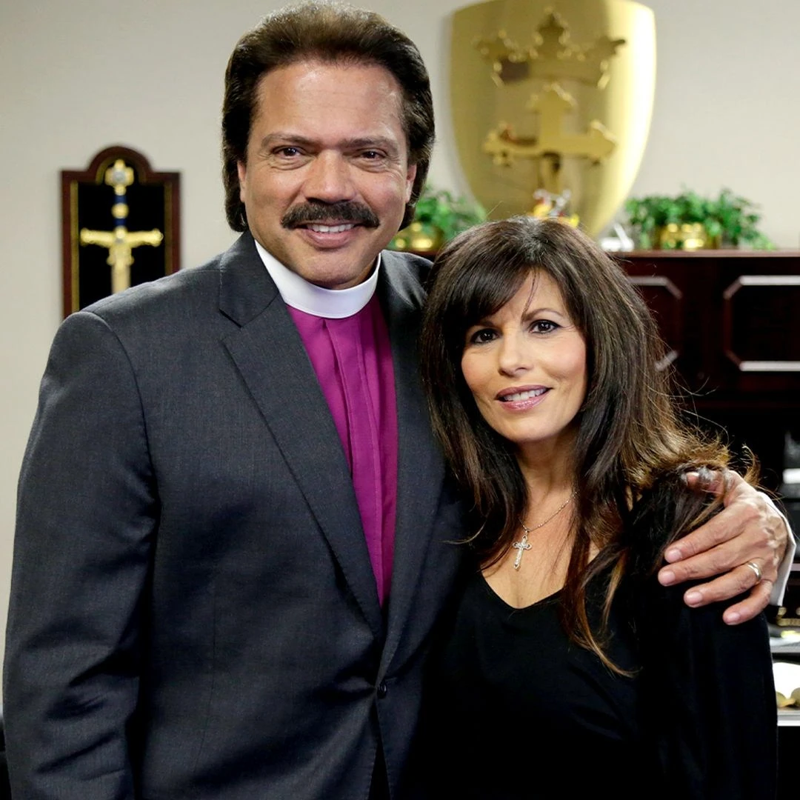
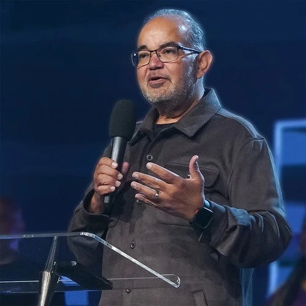
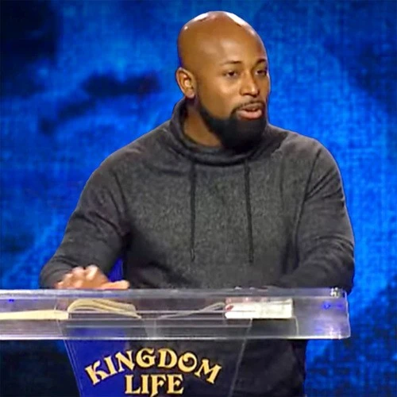
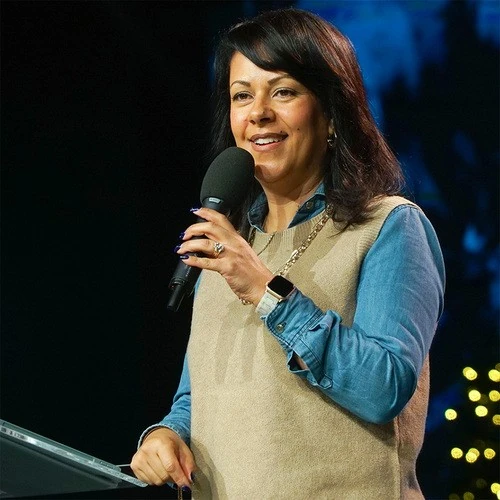
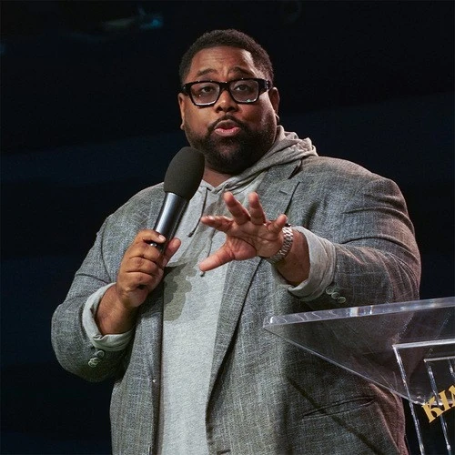
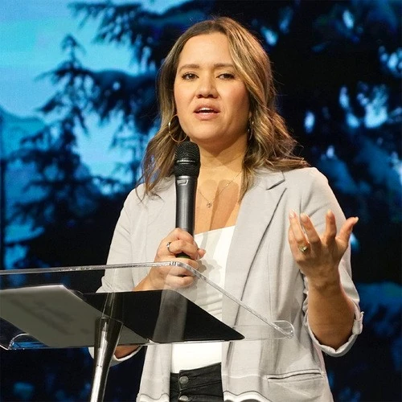

Our leadership is a team comprised of ordained pastors who are responsible for the care, the guiding, and the leading of our Kingdom Life community.
Kingdom Life leadership
Bishop Jay & Jeannine Ramirez

The founding pastors · Church archive
Founding Pastors
Bishop Jay & Jeannine Ramirez
Bishop Jay and Jeannine Ramirez are the founding pastors of Kingdom Life Christian Church, also overseeing other churches and ministries in the US and in other countries.
Read the founding pastors’ biography
Since the founding of KLCC in 1991 to the present, both serve as the senior elders of the KLCC ministry leadership. They offer guidance, accountability, and counsel to the lead pastor, and to the ministry staff, as well as speak periodically from either the pulpit, in department gatherings, or in private leadership meetings. Together they both oversee and manage many of the major administrative functions of the ministry. This includes property management, accounting and investments, employee administration, legal issues, insurance, equipment and vehicle purchases, and other areas. Traveling frequently as a primary outreach ministry of Kingdom Life, Bishop and Jeannine have spoken at events, consult ministry leaders, secular business leaders, and companies. All carried out with the Kingdom mandate to bring salt and light to the unchurched world, as well as to the people of God. Bishop and Jeannine have two daughters, Danielle and Tiffany, one son-in-law, Pastor TJ Niglio, and a granddaughter, Antonella.
With a passion for truth, Pastor TJ is an example of what Jesus told us when He commissioned us to go into all the world and make disciples. Brilliantly he has used his character and discipline to lead both in our church and on the job. Since licensed in 2018 and ordained in 2023, Pastor TJ was set apart for ministry, blending facts and figures with faith, introducing the Gospel through logic and reason. He never backs down from the tough questions and keeps a compassionate heart toward the hearer.

Manny Cintron
Associate Pastor
Biography
From his first introduction to Kingdom Life, to the unbelievable way he merged the church he was pastoring and joined with us, to leading an area of ministry that has been a personal passion well before the opportunity presented itself, there have been many roads that Pastor Manny has traveled and we're glad they all lead him here. Licensed in 2005 and ordained in 2023, he serves as the man behind the scenes for all our productions. If you've streamed a service live, listened to our podcast, or marveled at the lights, camera, and action in person, it's Pastor Manny and his team that make what you see come to life.

Jason Thomas
Associate Pastor
Biography
Since joining Kingdom Life as a teenager, Pastor Jason has been an integral part of our praise and worship team. Whether arranging sets or writing original music, he and his team have been consistent in providing an environment where all people can experience the presence of God. From his licensing in 2015 and ordination in 2023, we've had the pleasure of watching Pastor Jason's preaching gift grow. Inspired by personal experiences and rooted in Scripture, he uses a conversational style to challenge and provoke all hearers to discover the Holy Spirit for themselves and the evidence of His fruit.

Sandy Vargas
Associate Pastor
Biography
Only a handful of people have been part of our ministry since its beginning 35 years ago; fewer still who have journeyed from being a teen and now raising their teens within this very ministry—Pastor Sandy is one of those rare few. Licensed in 2018 and ordained in 2023, Pastor Sandy brings a vibrant passion for worship and youth discipleship. Making the Scripture accessible and relevant, she is committed to using every creative avenue to equip teens with biblical truth—offering support and guidance, always leading with grace and love.

Brandon Kellum
Associate Pastor
Biography
Leading from the heart of a servant, Pastor Brandon has been a constant for years with our children, youth, and young adults. Today he leads a vibrant prayer ministry, disciples those newest to the faith, and connecting and enriching our church family to create friendship and belonging. Since his licensing in 2018 and ordination in 2023, Pastor Brandon has continued to grow, teaching with humor and cultural relevance to meet the hearers where they are, and bringing truth whenever the opportunity presents itself.

Lori Burgos
Associate Pastor
Biography
Believing that a strong faith begins at home, Pastor Lori's mission is dedicated to empowering families and training volunteers to raise children who are ready to thrive in the world ahead of them. Ordained with Kingdom Life in 2026, Pastor Lori blends logic, reason, and a deep love for the Word to provide a safe space for kids to dream big, discover their purpose, and grow in character. Together with her team, she is shaping a generation of courageous disciples to lead with compassion and a firm foundation in Christ.